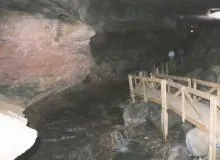

Turizme Açılmış Mağaralar 1

Biz, Türk halkı olarak ucuz siyaseti severiz. Sığlığımız ve cehaletimiz, üzerine katmerlenen köşe dönmeci zihniyetimizle birleşince bizim için ucuz siyaset biçilmiş kaftan oluverir. Biz ucuz yoldan, çalışmadan para kazanmaya bayılırız. Dolayısıyla, bir politikacı “Köyünüzdeki mağaraları turizme kazandıracağım” dediğinde üstüne balıklama atlarız. Ne de olsa o mağarayı yıllardır biliyoruzdur, babamız, büyükbabamız onca yıl içinde define aramış, bulamamıştır. Mağaranın kazılmadık yeri, kırılmadık dikiti kalmamıştır. Eh, bir geçim kapısı kapandı mı? İşte ikinci geçim kapımız, siyah takım elbisesi ve makam aracı ile önümüzde duruyor ve önümüzdeki yıl yapılacak seçimler için bizim oyumuzu dileniyor, neden olmasın?Sanki o mağara bizimmiş gibi, sanki kapıda biz bilet kesecekmişiz gibi, sanki o mağara turizme açılınca akın akın turist gelecekmiş gibi, sanki alt yapı, elektrik bedava imiş gibi. “Turizme açılsın”, değil mi? Aman yahu, ne gam? İnşaat veya elektrik parasını onlar mı veriyor sanki?
“Allah’ın yarattığı mağara işte ülece duri, biraz da biz nasipleniverik, nolcek?”
Bu insancıklar bu mağaranın neyinden nasiplenecekler, belli değil. Öte yandan, bu cahillerin dürttüğü operasyondan karlı çıkanlar yok mu? Tabi var. Ama kazananlar o politikacıya oyunu veren cahil köylüler değil. Öncelikle, “Mağaranız ihtimamla turizme açılır” ilanı bile verebilen bir şirket yapılan bu ihaleleri alarak kazançlı çıkıyor. Ardından, Tınaztepe’den yolun ağzındaki benzinci, Dim’den ise emekli bir MTA’cı “nasipleniyor”. Bulak Mağarası ise, 3.- TL’lik bilet parası ile hiçbir halt kazanılamayacağını çok geç anlayan işletmeciler yüzünden her yıl el değiştiriyor. Diğerleri? Onların bilet paraları Özel İdare’ye gidiyor, inanılmaz şişkin elektrik faturaları ise bu ülkenin vatandaşları olarak bizlere geliyor.
Şimdilik sadece 15 – 20 taneler ve çok azı özel ama, duyduğumuza göre Hükümet, diğer konularda olduğu gibi mağaralar için de toplu bir pazarlama stratejisi hazırlıyormuş. Dolayısıyla, bir tarafta bu kadar cahil vatandaş ve bu kadar çok mağara, diğer tarafta ise beceremedikleri ekonomik politikayı bu ülkenin varlıklarını satarak telafi etmeye çalışan bu politikacılar varken bu ülkede daha çok mağara “turizme açılır”.